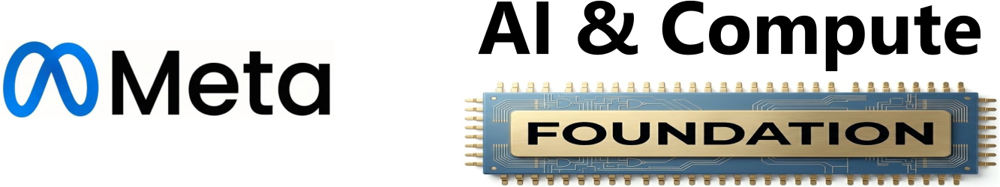

Meta's AI & Compute Foundation team, led by CQ Tang (a.k.a. Chunqiang Tang), comprises world-class research scientists and engineers developing foundational AI and compute technologies. Our focus areas include:
Our primary measure of success is delivering AI and compute systems into production to serve billions of people across Facebook, Instagram, WhatsApp, Messenger, Threads, and Meta AI. This requires continuous innovation, and our philosophy is "research in production": first delivering hyperscale production systems with real-world impact, then summarizing our innovations and experiences as research papers at top conferences.
Papers based on our hyperscale production systems have won prestigious Best Paper Awards at SOSP, OSDI, ISCA, and ASPLOS, and have been featured as IEEE Micro Top Picks, Communications of the ACM (CACM) Research Highlights, and a CACM cover story. We also publish in broader venues such as ICML, NeurIPS, SC, MICRO, HPCA, NSDI, VLDB, and MLSys.
We are proud of our world-class publication record below, but our greatest pride is the production systems we build, from chips to software, that serve billions of people.
The broad scope of our work---spanning hardware, software, and AI models---makes a complete overview challenging. A quick way to glimpse our work is by reading the abstracts of the few papers highlighted below. For broader topics, please refer to our publications.